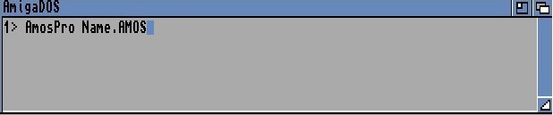

AMOS Professional has no need for a different run-only version of the main AMOS Professional system, and this Chapter explains the simplicity of creating run-only discs.
If you are familiar with the original AMOS system, you may be expecting to find the AMOS Professional equivalent of the separate run-only version of AMOS, called RAMOS. This allows you to run AMOS programs completely independently from the AMOS package, but with AMOS Professional there is no necessity for RAMOS at all!
AMOS Professional can be regarded as three interlinked programs, namely the Editor, the Monitor and the Interpreter. Obviously, the main element is the Interpreter, "AMOSPro". The Interpreter can be called along with the name of a program, without the Editor or Monitor, like this:
The program will be loaded along with the Interpreter, and executed. When the program has been run, AMOS Professional will look for the "AMOSPro.Editor" file in the APSystem folder. If it is found, the Editor will be loaded into memory. If the file is not found, you will be brought back to the Workbench.
To create a run-only disc, simply copy your AMOSPro System disc, and remove the following files from the APSystem folder:
AMOSPro.Editor AMOSPro.Editor_Config AMOSPro.Monitor AMOSPro.Monitor_Resource
Please note that when booting, if AMOS Professional finds the "Autoexec.AMOS" file in the current directory, this program will be run before the Editor is loaded.
Because the Editor is a separate program, the Interpreter is not only able to work without it, but can also load it when a program is over, if necessary.
instruction: remove the AMOS Professional Editor from memory
Kill Editor
The KILL EDITOR command unloads the AMOS Professional Editor from memory.
In order for this command to operate, it must be enabled in the Interpreter configuration file. Also, please note that the current program cannot be an accessory if KILL EDITOR is to work and the program cannot be a program that has been PRUNed by another program. Otherwise, for all other programs, the following operations are performed when KILL EDITOR is called:
Remember that Kill Editor must be enabled from the [Set Editor] option in the [Config] menu for it to work.
You are reminded that the PRG STATE function can be used to establish how a particular program was run. PRG STATE returns the current status of a program in the form of one of three possible values.
Value Meaning 0 The program was run under the AMOS Professional Interpreter 1 The program was run under a run-time environment -1 The program has been compiled